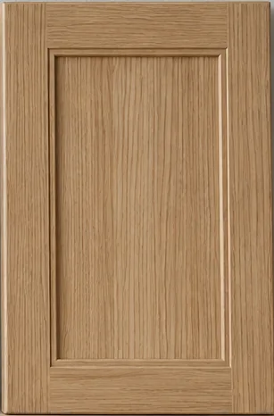

Thank you for visiting the Kerfline Cabinetry website. We are a locally owned and operated company providing quality kitchen and bath cabinets to Asheville, NC and the surrounding areas. Our experienced team is committed to excellence in every job we do, big or small.
Customer satisfaction is our #1 priority. Please browse our website to learn more, and don't hesitate to contact us with any questions!
01/15/2014 - We are proud to announce the launch of our new website!
Visitors: 004127